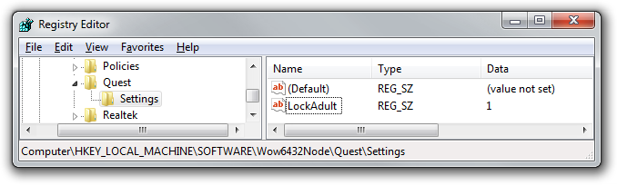

Configuring Quest
Quest’s Options window lets you show or hide the “Adult” category.
If you prefer this option to be unavailable (i.e. “lock out” the Adult category, so there is no way for it to be shown), then you can block this option by making a registry change. If you’re deploying Quest on a network, it should be possible for a network admin to make this change automatically across all machines.
On x86 machines, add the following registry key:
HKEY_LOCAL_MACHINE\Software\Quest\Settings
On x64 machines, add the following registry key:
HKEY_LOCAL_MACHINE\Software\Wow6432Node\Quest\Settings
Next, set add a new string value called “LockAdult”, and set the value to 1.
